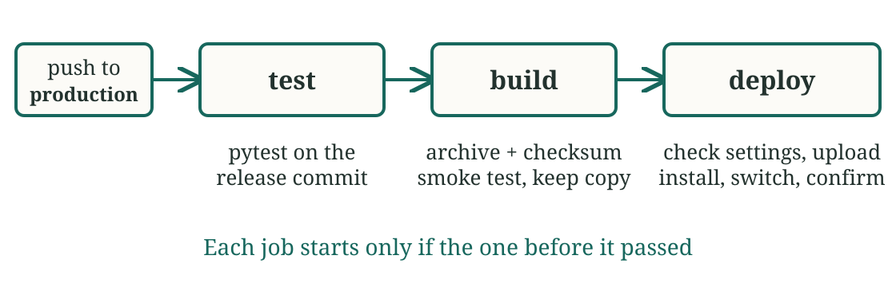

From approved code to a running, verified release
Gregory S. DeLozier, PhD
The calculator is tested, reviewed, and merged.
Nobody can run it yet.
Copying files by hand drops a file, uses the wrong branch, and leaves no record of what is live.
| Practice | What it adds |
|---|---|
| Continuous integration (CI) | Frequent merges, automated checks |
| Continuous delivery (CD) | Always releasable; release is a routine step |
| Continuous deployment | Every passing change releases itself |
Which decision do we keep for a person?
| Branch | Meaning |
|---|---|
main |
Integrated, reviewed, tested |
production |
The commit we chose to release |
Merging decides about the code. Promoting decides about timing.

needs: makes each job wait for the one before it.
main passed. Why run pytest again?
The evidence should belong to the commit that ships.
Someone can push production without going through
main.
Copy code/calculator/ into the sandbox repository.
Expected: 10 passed.
| File | Purpose |
|---|---|
calculator.py |
The program |
VERSION |
Full commit identifier |
smoke_test.sh |
Quick check where it lands |
Release id: first seven characters of the commit.
pytest imports add. It never runs the command-line
program.
Unpack the archive; run calculator.py 2 3; expect
5.0.
What can break in packaging that pytest cannot see?
- uses: actions/upload-artifact@v7
with:
name: calculator-release
path: dist/
retention-days: 30
if-no-files-found: errorDeploy downloads this file. Nothing is rebuilt.
scripts/build_release.sh abc1234 \
0123456789012345678901234567890123456789
tar -tzf dist/calculator-abc1234.tar.gzUnpack elsewhere; run smoke_test.sh.
Remove calculator.py from the tar list: the
smoke test fails, pytest still passes.
- uses: shimataro/ssh-key-action@v2
- uses: actions/checkout@v2
- run: scp index.html root@example.org:/root/webIt works. What is missing?
| Basic form | This pipeline |
|---|---|
| No tests first | needs: build, after tests |
Logs in as root |
Account owns one directory |
| Host key checking off | Server key pinned |
| Loose files | One checked archive |
Success when scp exits |
Success when the version matches |
| Setting | Kind |
|---|---|
DEPLOY_HOST, DEPLOY_USER,
DEPLOY_PATH |
Variables |
DEPLOY_SSH_KEY, DEPLOY_KNOWN_HOSTS |
Secrets |
Stored on the production environment.
scripts/check_deploy_config.sh reports names,
never values.
rootCheck who answers.
StrictHostKeyChecking yes with the real host key.
Limit what the key can do. One account, one directory, a key made for this purpose.
Pin third-party actions to full commit identifiers.
ssh-keygen -t ed25519 -N '' -f deploy_key
ssh-keyscan -t ed25519 HOST > known_hosts
ssh-keygen -lf known_hostsCompare the fingerprint with one from the server’s owner.
Store variables and secrets with
gh ... --env production. Keep the key out of the
repository.
/srv/calculator/
incoming/ archive + checksum
releases/ abc1234/ def5678/
current -> releases/def5678
previous abc1234Verify checksum, unpack to staging, smoke test, move, switch
current, smoke test again.
Compare with the commit being released.
A successful copy shows bytes arrived. This shows the right version is live.
| Control | Effect |
|---|---|
| Concurrency group | One release at a time |
Required reviewers on production |
Pause for approval before deploy |
Protected production branch |
Only named people promote |
What would change if every merge deployed itself?
In Actions, find: 10 passed, the smoke test line,
the calculator-release artifact, and
Server is running <commit>.
Then check the server yourself.
| Change | Stops at | Server |
|---|---|---|
| Wrong test assertion | test |
Unchanged |
DEPLOY_PATH removed |
deploy settings check |
Unchanged |
calculator.py left out of the archive |
build smoke test |
Unchanged |
A symlink switch restores code.
It does not restore data.
production now names a commit that is not running.
Older than the server’s five releases? Redeploy by ref,
or rebuild from the commit.
Merge a harmless change; promote; confirm two releases exist.
Activate the first. Check current/VERSION.
What should happen next, and what record do you leave?
Show the path, not the claim:
VERSION on the running productTests passed. The archive unpacks. One example ran on the server. The version matches.
Not shown: users are satisfied, the server stays healthy, the requirement was right.